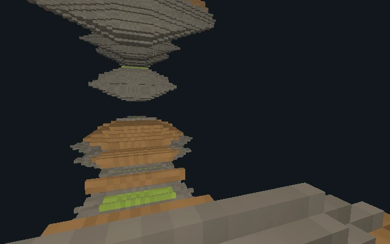
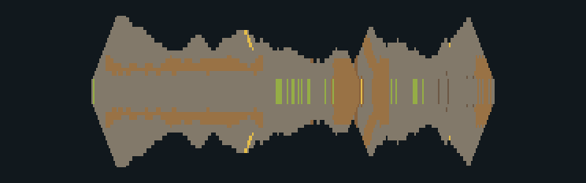

Three ways to give
the Mines depth.
One actual area from Noita’s first level. Three different interpretations of its missing dimension.
Design mockups, not game screenshots. These are CPU-rendered volumes built from saved Mines materials. Depth and folds are proposed. No map has been replaced.
B. Shaped volumes
Recommended first study, not a proven solutionProposed 3D volume
The original cross-section remains the anchor. Thick rock gets more depth; narrow formations taper. There is room to move around a mass, not just along a thin corridor.
Tradeoff: those new ways around rock can bypass original obstacles. They must be reviewed before this becomes a faithful playable layout.
Player-eye mockup

Where the depth actually goes

What each direction buys—and costs.
A. Least interpretation
Every visible solid becomes the same-thickness extrusion. It is a useful recognition control, but depth is repetitive. I would not call this the requested full-3D result.
B. More natural local space
Rock masses gain individual volume without relocating the source landmarks. It makes the missing dimension tangible. It also adds routes and changes how fluids can spread.
C. Actual changes of heading
The left and right source strips turn around vertical hinges. The footprint is no longer a straight ribbon. Here the cuts are illustrative—not verified native junctions.
My preference: establish B, then evaluate C.
First make one original chamber recognizable as a volume. Then consider folding coherent branches around it. Do not repeat a map-wide curve, or disguise loading slices as levels.
Copies the selected study and its source reference. This does not approve an implementation or send anything.
Source, construction, and limits
The source is an actual saved Mines chunk, world_-512_512.png_petri. Its native biome-map cell is (34, 15), mapped to data/biome/coalmine.xml: the Mines, not Coal Pits.
- A: constant 26-preview-voxel thickness.
- B: depth tapers using an interior-distance profile. This is a lightweight illustrative profile, not an implementation of Teddy or Noita’s engine.
- C: B’s profiles with left/right strips turned −55° / +80° around vertical hinges at local source X = 128 and 384. These cuts are not approved fold locations. Contacts and overlaps at the joins are unvalidated.
- Not simulated: gravity, collision, destruction, liquids, gases, conservation, or progression. Liquids are frozen in place. These pictures cannot establish playability.
- Not original evidence: the added dimension, the depth profiles, the hinges, and the illustrative lighting. Only the input material section comes from Noita.
- Open section: removes the front half of the model to expose its source plane. This is a viewing cut, not a tunnel proposed for the game.
Prior-art references: Metroid Cubed’s source-driven voxel modeling, 3dSen Maker’s local depth controls, and Teddy’s silhouette inflation. These studies borrow ideas, not a claim that those projects solved Noita.
Download the source and camera manifest · Earlier implementation and source evidence